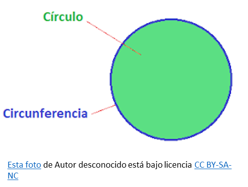
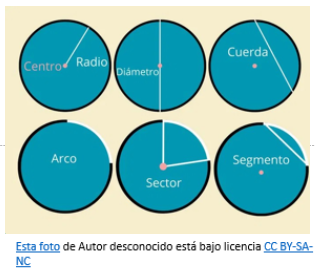

Círculo
Un círculo es una figura geométrica plana y simétrica integrada por la superficie contenida dentro de una circunferencia.

Partes del Círculo

Centro: centro es fundamental para definir la simetría del círculo
Radio (r): segmento que une el centro del círculo con cualquier punto en la circunferencia.
Diámetro (d): es el segmento de línea que pasa por el centro y une dos puntos opuestos en la circunferencia
Circunferencia: es el borde o perímetro del círculo.
Cuerda: es un segmento de línea que une dos puntos cualquiera de la circunferencia, sin necesariamente pasar por el centro.
Arco: es una porción o sección de la circunferencia comprendida entre dos puntos específicos.
Sector circular: área delimitada por dos radios y el arco que conecta sus extremos.
Segmento circular: es la región del círculo comprendida entre una cuerda y el arco localizado entre los extremos de esa cuerda.
Propiedades del círculo
Área del círculo: El área de un círculo es la superficie que ocupa, el espacio contenido dentro de su circunferencia.
Perímetro del círculo: El perímetro de un círculo se corresponde con la circunferencia. Una de las propiedades más conocidas del círculo es que la relación entre la circunferencia y el diámetro es constante.
Proporcionalidad del círculo: El círculo posee unas propiedades de proporcionalidad con respecto al área, perímetro y radio. Rafael C. Asth. (2024)
Actividad Formativa